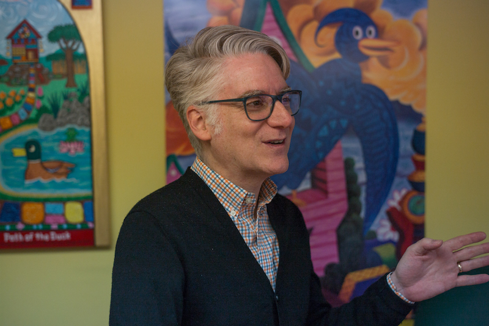

Rodney Alan Greenblat is an American pop artist, illustrator, picture-book author, and toy designer born in Daly City, California on August 23, 1960. He has spent four decades drawing brightly outlined, irrepressibly cheerful characters that look like they wandered out of a Saturday-morning cereal commercial — and although gallerists and collectors have known him since the early 1980s, the rest of the world knows him as the visual co-creator of PaRappa the Rapper. In a 2003 interview with Game Developer, Greenblat famously cast the franchise's parentage in domestic terms: composer Masaya Matsuura, he said, was PaRappa's father, and "I'm the mother." That two-parent metaphor sums up the whole NanaOn-Sha collaboration: Matsuura wrote the rhythm, Greenblat gave it a face. ロドニー・アラン・グリーンブラットは、1960年8月23日カリフォルニア州デイリー・シティ生まれのアメリカ人ポップアーティスト、イラストレーター、絵本作家、玩具デザイナーです。土曜の朝に流れるシリアルのCMからそのまま飛び出してきたような、太い輪郭線で囲まれた抑えきれない陽気さを湛えたキャラクターを40年描き続けてきました。1980年代初頭からギャラリストやコレクターのあいだではすでに知られていましたが、世間一般がその名を知ったのは『パラッパラッパー』のヴィジュアル共同制作者としてでした。2003年のGame Developer誌のインタビューで、グリーンブラットは作品の系譜を家族にたとえてこう語っています——作曲家・松浦雅也がパラッパの父親なら、「私は母親」。この親二人のメタファーは、七音社との共同作業全体をきれいに言い表しています。リズムを書いたのが松浦なら、そこに顔を与えたのがグリーンブラットだったのです。
Greenblat earned his BFA at the School of Visual Arts in New York between 1978 and 1982 (with a year at the Corcoran School of Art in Washington, DC) and stepped almost directly into the East Village gallery boom that defined the 1980s downtown New York scene. His first solo show in Manhattan was at the legendary Gracie Mansion Gallery in 1983, and three more followed through 1990. He was bracketed in the press alongside friends and contemporaries like Keith Haring and Kenny Scharf — neo-pop, neo-surrealist, neo-childish — and in 1985 the Whitney Biennial included his oversized sculpture installation Ark of Triumph. The same New York period brought him a job most graphic-art students would kill for: he produced cover and sleeve artwork for They Might Be Giants' earliest Bar/None LPs. 1978年から1982年にかけて、グリーンブラットはニューヨークのスクール・オブ・ビジュアル・アーツで美術学士号を取得（途中ワシントンD.C.のコーコラン美術学校に1年間在籍）。卒業と同時に、1980年代ダウンタウン・ニューヨーク・シーンを象徴したイースト・ヴィレッジのギャラリー黄金期に飛び込んでいきます。1983年、伝説的なグレイシー・マンション・ギャラリーで初の個展を開催し、その後1990年までに同ギャラリーで計4回の個展を行いました。当時のメディアでは、キース・ヘリングやケニー・シャーフといった友人・同世代と並ぶ「ネオポップ／ネオシュルレアリスト／ネオチャイルディッシュ」な作家として括られています。1985年にはホイットニー・ビエンナーレに大型彫刻インスタレーション『Ark of Triumph』が出品されました。同じ時期、彼はグラフィック専攻の学生なら誰もが羨む仕事も得ています——バンドThey Might Be GiantsのBar/None初期作品でジャケットアートやMV映像を担当しているのです。


As 1980s gallery painting gave way to 1990s digital experimentation, Greenblat was one of a handful of fine artists who jumped early. Rodney's Funscreen (Activision, 1992) and Rodney's Wonder Window (Voyager, 1992) were among the first commercial CD-ROMs designed for kids; Dazzeloids (Voyager, 1994) was a fully-fledged interactive picture-book about a chaos-loving superhero gang. He followed those with Rodney's Funscreen 2 Extreme and Rodney's Artbrain for the Japanese publisher Interlink in 1997. Across the same years his work was drawing huge crowds in Japan: he showed at Creation Gallery G8, the Parco department store, and inside Sony Plaza, and Sony Creative Products began licensing his characters for stationery and homewares. By the time Sony's PlayStation team came looking for an artist, Greenblat already had something close to celebrity status in Tokyo design circles. 1980年代のギャラリー絵画から1990年代のデジタル表現へと時代が移り変わるなかで、グリーンブラットは早い段階でその転換に飛び込んだ数少ない美術家の一人でした。『Rodney's Funscreen』（Activision、1992）と『Rodney's Wonder Window』（Voyager、1992）は、子ども向けに制作された最初期の市販CD-ROM作品。1994年のVoyager作品『Dazzeloids』は、混沌をこよなく愛するスーパーヒーローたちが活躍する、本格的なインタラクティブ絵本でした。1997年には日本のパブリッシャーInterlinkから『Rodney's Funscreen 2 Extreme』と『Rodney's Artbrain』を発表しています。並行して、彼の作品は日本でも大きな反響を集めていました。クリエイションギャラリーG8、PARCO、ソニープラザでの個展を重ね、ソニー・クリエイティブプロダクツが彼のキャラクターを文房具や生活雑貨にライセンスするようになります。ソニーのPlayStationチームがアーティストを探し始めたとき、グリーンブラットはすでに東京のデザイン業界で半ばセレブリティのような存在になっていたのです。

The PaRappa partnership was brokered by Sony Creative Products, the licensing arm that already handled Greenblat's Japanese merchandise. By his own account, Matsuura's wife — herself an artist — had been reading his picture books, and Matsuura had played his CD-ROMs; that mutual familiarity meant the cold-call was barely a cold call at all. As Greenblat put it in a 2017 retrospective with Arcade Attack, "Matsuura and his team were already fans of my children's books and CD-ROM productions. They asked me to design the characters and world for the new mysterious and fantastic Playstation 1." Matsuura's first pitch for the protagonist was, surprisingly, an anthropomorphic shrimp; Greenblat pushed back and proposed a dog instead, arguing that a dog could embody the personality the team kept asking for — what he later summarised as "trustworthy, loyal, hardworking, romantic and a little insecure." He drew several rapper-dog variations, the team chose one, and the entire main-character design was locked in roughly two weeks. Across 1995 and 1996 he handed off Sunny Funny, PJ Berri, Katy Kat, Chop Chop Master Onion, Mooselini, Joe Chin, and the rest of PaRappa Town as flat 2D drawings; NanaOn-Sha then built the 3D environments around those paper cut-outs. His sketchbook output traveled to Tokyo first by fax — Matsuura has remarked that the original ink "is fading gradually" on the early sheets — and only later by email. パラッパでのコラボレーションを仲介したのは、すでにグリーンブラットの日本でのグッズ展開を手掛けていたソニー・クリエイティブプロダクツでした。本人の弁によれば、当時の松浦の妻はアーティストで彼の絵本を愛読しており、松浦自身も彼のCD-ROM作品をプレイ済み——いわゆるコールドコールがほぼ初対面ではなかった、というのが実情です。2017年のArcade Attack誌のインタビューでは「松浦さんとそのチームは、すでに私の絵本やCD-ROM作品のファンだった。だから、PlayStationという神秘的で素晴らしい新型機のために、キャラクターと世界をデザインしてほしいと声をかけられたんだ」と語っています。主人公について松浦が最初に提案したのは、意外にも擬人化されたエビでした。グリーンブラットはこれに異を唱え、犬を逆提案。理由は、チームが繰り返し求めていた人格——のちに本人が「信頼でき、忠実で、勤勉で、ロマンチックで、ちょっと自信がない」と要約した性格——を最も自然に体現できるのは犬だ、というものでした。彼は複数のラッパー犬のバリエーションを描き、その中からチームが一案を選び、主人公のデザインはおよそ2週間で確定しています。1995〜1996年にかけて、サニー・ファニー、PJベリー、ケイティ・キャット、タマネギ先生、ムースリーニ、ジョー・チン、その他パラッパタウンの住人たちは、すべて平面の2Dドローイングとして東京に送られました。七音社はそれらの紙のような2Dを元に3D空間を組み立てたのです。スケッチは当初すべてファックスで太平洋を越え——松浦は「最初期のシートは、いまもインクが少しずつ退色している」と語っています——のちにEメールでのやり取りに移行しました。

Three years after PaRappa, Matsuura returned to Greenblat not with a sequel but with a left-field rock-music spin-off whose lead character was a girl, a guitar, and an industrial-strength case of stage fright. The headache for Greenblat was the design itself: he later joked that he must have done "four or five different Lammys", and the second sketch is the one that ended up on the disc. Where PaRappa took two weeks, Lammy took roughly half a year of revisions before everyone signed off. Around her he built the rest of the band — bassist Katy Kat reprised from the first game and new drummer Ma-san — branded them MilkCan, and folded in a parallel rival, Rammy, to give the player a darker counterpart. He also sketched out the entire surreal Lammyland (the airport baby, the hospital, the lumberjack chainsaw stage) as flat-shaded backdrops in the same paper-cut style as PaRappa Town. Greenblat liked what the team did with the new gameplay, telling interviewers that Um Jammer Lammy "has everything that Parappa 1 has, but is more complex and challenging to play." 『パラッパ』から3年後、松浦が再びグリーンブラットを訪ねたのは続編の依頼ではなく、女の子と一本のギター、そして筋金入りのステージ恐怖症を主役に据えた、ロックミュージック路線の意表を突くスピンオフでした。グリーンブラットにとっての難所は、何より主人公のデザイン自体。本人もインタビューで「ラミーは4〜5パターン描いたと思う」と振り返っており、最終的に採用されたのは2案目のスケッチでした。パラッパの主人公が2週間で決まったのに対し、ラミーはチーム全員のOKが出るまでおよそ半年を要しています。彼女の周辺では、前作から続投するベース担当のケイティ・キャット、新加入のドラマーマサンを擁するバンドミルクカンを編成し、ダークなカウンターパートとしてライバルのラミーを投入。シュールなラミーランドの世界観——空港の赤ちゃん、病院、チェーンソーが鳴り響くきこりステージなど——も、すべてパラッパタウンと同じペーパーカット調のフラットシェード背景として描き上げています。ゲームプレイに関しても満足していたようで、グリーンブラットはインタビューで「ラミーには、パラッパ1にあるものはすべてある。そのうえで、より複雑で歯ごたえがある」と語っています。

Greenblat had been agitating for a direct PaRappa sequel from the moment the first one shipped, and PaRappa 2 in 2001 was finally his chance. By his own admission this was the most plot-driven he had ever been allowed to be on a NanaOn-Sha project: the storyline turns on a town-wide noodle craze, and Greenblat had to design visual noodle gags — from Beard Burgers franchises to the cult of Colonel Noodle — alongside a fresh roster of teachers (Hairdresser Octopus, Cathy Pillar's mother, the Hot Dog Stand cooks). PaRappa, Sunny, PJ, and Katy were redrawn for the PlayStation 2's higher polygon budget, but Greenblat insisted on keeping the line work flat and printable, refusing any faux 3D shading that would have broken the stickered look. The result was a sequel that felt sleeker than the original without losing any of its picture-book charm — Greenblat's fingerprints visible on every billboard, every car, every storefront sign in the background. グリーンブラットは『パラッパ』の発売直後から正統な続編を強く希望しており、2001年の『パラッパラッパー2』はようやくその念願が叶ったプロジェクトでした。本人いわく、七音社作品で物語の比重がここまで大きかったのは初めて。ストーリーの軸は街中を巻き込むヌードルブームで、グリーンブラットはビジュアルとしてのヌードルギャグを大量に求められました——ヒゲバーガーのチェーン店から、カーネル・ヌードルを崇拝するカルト集団まで——加えて、ヘアドレッサー・オクトパス、キャシー・ピラーの母親、ホットドッグスタンドのコックたちといった新しい先生キャラクター群もすべて設計しています。パラッパ、サニー、PJ、ケイティはPlayStation 2のポリゴン予算に合わせて描き直されましたが、グリーンブラットはあくまで線画をフラットかつ印刷可能なままに保つよう主張し、シリーズの「貼り付けたシール」のような質感を壊しかねない疑似3Dシェーディングは一切排除しました。その結果、本作は前作の絵本的な親しみやすさを失うことなく、しかし確実に洗練された続編に仕上がっています。背景に並ぶ看板、自動車、店舗のサインの一つひとつにまで、グリーンブラットの指紋がしっかりと残されている作品です。

The 2007 PSP edition of the original game was a tenth-anniversary project rather than a true new release, and Greenblat's involvement was supervisory rather than creative: NanaOn-Sha and Sony pulled his original 1996 character sheets out of the archive and re-sized them for the PSP's 480×272 widescreen panel, and he signed off on the cover key art and the wide-screen reformatting of his 2D character drawings. The package also bundled a small fold-out poster lifted directly from his promotional artwork. Although he didn't draw new locations or characters for the port, the PSP version is the first time the entirety of Greenblat's PaRappa Town was made portable, and his line art holds up beautifully at the handheld's higher pixel density. 2007年のPSP版『パラッパラッパー』は厳密には新作ではなく10周年記念企画で、グリーンブラットの関与もクリエイティブというよりは監修寄りでした。七音社とソニーは1996年当時のオリジナルキャラクターシートをアーカイブから取り出し、PSPの480×272ワイドスクリーンパネル向けにリサイズ。彼自身は表紙のキーアートと、2Dキャラクター画のワイド画面用再構成にOKを出す役割を担いました。パッケージには彼のプロモーションアートをそのまま流用した小ぶりな折り込みポスターも同梱されています。新しい背景やキャラクターを描き起こしたわけではないものの、本作はパラッパタウン全体が初めてポータブル機に収められた瞬間であり、彼の線画は高精細な携帯機の画素密度でも美しさを保っています。

For the franchise's twentieth anniversary, Sony Japan Studio shipped a 4K-ready remaster of the 1996 original on PS4 in April 2017. Greenblat once again played guardian of the visual style rather than redrawing it: the team scaled his existing character art up for high-resolution displays and reformatted the cinematic FMVs for 16:9, and Greenblat reviewed the upscales and signed off on the cover art and on the 20th-anniversary key visuals used in the marketing campaign. He also produced a small batch of new 20th-anniversary illustrations, prints, and merchandise — most distributed through his own RodneyShop and the various PaRappa anniversary events — that explicitly referenced the remaster's release. He has been candid in interviews that he would happily come back for a brand-new PaRappa game; "I hope so!", he told Arcade Attack in 2017 when asked about future entries. シリーズ20周年を機に、ソニー・ジャパンスタジオは1996年のオリジナルを4K対応のリマスター版としてPS4向けに2017年4月に発売しました。本作でもグリーンブラットの役割は描き直しではなく、ビジュアルスタイルの守護者でした。チームは彼の既存キャラクターアートを高解像度ディスプレイ向けにアップスケールし、ムービーパートを16:9にリフォーマット。グリーンブラットはアップスケール結果を確認し、ジャケットアートおよび販促キャンペーンで使用された20周年キービジュアルにOKを出しています。さらに、リマスター発売を明確にフィーチャーした20周年記念のイラスト、版画、グッズも少数制作し、その多くはRodneyShopやパラッパの各種記念イベントを通じて販売されました。インタビューでは「新作パラッパが作られるなら喜んで参加する」と前向きな姿勢を一貫して見せており、2017年にArcade Attack誌が次回作の予定を尋ねた際には「そう願ってます！」と即答しています。
Outside the rapping-dog universe, Greenblat has continued to produce at a pace most studio painters can only envy. He authored and illustrated picture books including Uncle Wizzmo's New Used Car, Aunt Ippy's Museum of Junk, and the long-running Thunder Bunny series. He provided character work for Major Minor's Majestic March (Majesco, 2009) on Wii — Matsuura's other parade-themed rhythm game, which reunited the duo for one last time. Through 2017–2020 he ran a brick-and-mortar storefront, The Rodney Shop, in Catskill, New York, selling original paintings, prints, vintage Japanese imports, and PaRappa-related merchandise. The umbrella brand for all of that — RodneyFun, later Whimsyload — still hosts new prints, plushes, and pins, and Greenblat remains an active and generous presence at PaRappa anniversaries, signing autographs and giving talks at events from Tokyo to Brooklyn. The original 1996 partnership turned out not to be a one-off contract but a near-thirty-year creative friendship; whenever the franchise has needed new art, Greenblat has been the one drawing it. ラップ犬の世界の外でも、グリーンブラットは多くのスタジオ画家がうらやむほどのペースで作品を発表し続けています。絵本作家としては『Uncle Wizzmo's New Used Car』『Aunt Ippy's Museum of Junk』、長期シリーズ『Thunder Bunny』などの執筆・作画を担当。ゲーム関連では、Wii向けの『Major Minor's Majestic March』（Majesco、2009）でキャラクターデザインを担当しています。同作はパレードを題材にした松浦のもう一つのリズムゲームで、二人にとって最後のがっつりとした共同作業となりました。2017〜2020年にかけては、ニューヨーク州キャッツキルに実店舗The Rodney Shopを構え、オリジナル絵画、版画、日本のヴィンテージ品、パラッパ関連グッズを販売。これらすべてを束ねるブランド——RodneyFun、後のWhimsyload——では今も新作版画、ぬいぐるみ、ピンバッジが発表されており、グリーンブラット本人も東京からブルックリンまで、パラッパの節目イベントに気さくに姿を見せ、サイン会やトークに登場し続けています。1996年の出会いは単発の業務委託ではなく、三十年近く続く創作上の友情となりました。シリーズが新しい絵を必要とするたびに、その筆を握ってきたのは——いつもグリーンブラットなのです。
Selected Exhibitions主な展覧会
1982 "The Threshold, Rodney Alan Greenblat," Museum of Art, Rhode Island School of Design
1983 Gracie Mansion Gallery, NYC
1984 "It's About Love" Anna Friebe Galerie, Cologne, West Germany
1985 "The New World" Gracie Mansion Gallery, NYC
1985 Whitney Biennial - Whitney Museum of American Art, NYC
1985 "Familiar Frontiers" Australian Centre for Contemporary Art, Victoria, Australia
1986 "House of Progress," Gracie Mansion Gallery, NYC, Karl Bornstein Gallery, Los Angeles, CA
1987 "Reality and Imagination, Two Taste Treats in One", Museum of Art, Penn State University
1987 "Paintings and Furniture" Hokin/Kaufman Gallery, Chicago, IL
1988 "Reality and Imagination, Two Taste Treats in One!," Institute of Contemporary Art, Philadelphia
1988 "Reality and Imagination" Contemporary Arts Museum, Houston, TX
1988 "The Scenic Route," Gracie Mansion Gallery, NYC
1988 "Design Your Own Future," Walker Art Center, Minneapolis, Minnesota
1989 John Berggruen Gallery, San Francisco, CA
1990 "Cosmic Adhesive" Gracie Mansion Gallery, New York, NY
1992 "Land Ho! The Mythic World of Rodney A. Greenblat" Museum of Art, Roanoke Virginia
1992 "Land Ho! The Mythic World of Rodney A. Greenblat" Chrysler Museum, Norfolk Virginia
1992 "The Center For Advanced Whimsy" Carpenter Arts Center, Harvard University
1993 "Computer Generated Images" PPOW gallery New York City
1994 "Rodney Time" Creation Gallery, Tokyo Japan
1994 "Land Ho! The Mythic World of Rodney A. Greenblat" World Financial Center, NYC
1997 "The Rodney Adventure" Discovery Museum - Bridgeport CT
1998 "New Studio Rodney" Parco department stores - Japan
1999 "Rodney's Art in a Box" Sony Plaza - Tokyo and Osaka Japan
2000 "Rodney's Character Club and Post Office" Parco Department Store - Tokyo and Osaka Japan
2000 "Cafe Rodney" Tokyo
2001 "Canworld Expo" Takashimaya Department Store - Osaka Japan
Children's Books絵本
1990 "Uncle Wizzmo's New Used Car" published by Harper Collins
1991 "Aunt Ippy's Museum of Junk" published by Harper Collins
1993 "Slombo The Gross" published by Harper Collins
1997 "Thunder Bunny" published by Harper Collins
1998 "Thunder Bunny" (Japanese version) published by Sony Magazines
2000 "RodneyFun Comic Collection No.1" published by Little More - Tokyo
Computer Softwareコンピューターソフト
1991 "Rodney's Funscreen" Computer learning games for children, published by Activision
1992 "Rodney's Wonder Window" Computer art on CD-ROM, Published by Voyager
1994 "Dazzeloids" Computer story book on CD-ROM, Published by Voyager
1996 "Clickamajigs" Downloadable interactive software toys for Nick Online, published by Nickelodeon.
Video Gamesゲーム
1997 "Parappa The Rapper" published by Sony Computer Entertainment
1999 "Um Jammer Lammy" published by Sony Computer Entertainment
2001 "Parappa 2" published by Sony Computer Entertainment
Animationアニメーション
1993 Ugo Ugo Lhuga - Japanese Children's program on Fuji TV - "Rodney Guy" daily segment
1994 Shelley Duvall's Bedtime Stories - Universal Studios - "Aunt Ippy", "Uncle Wizzmo" episodes
2000 "Chinese Disco" music video for rock/pop band Shonen Knife
2001 "Parappa The Rapper" produced by Sony Visual Works, broadcast on FUJI TV
2002 "Bibi Little's Rainbow Day - A Thunder Bunny Fuwa Fuwa Story" produced and distributed by Sony Creative Products, animation by Yuichi Ito
Teaching教職
1993 - 1997 School of Visual Arts - New York City - Masters, Computer Art, Interactivity
Illustration and Design Clientsイラスト・デザインの主なクライアント
US: Vanity Fair, The New York Times, Child Magazine, Sesame Street Magazine, Entertainment Weekly, The New Yorker, Macromedia, Nickelodeon, Microsoft.
Japan: McSister, FP, Pronto, Illustration, Olive, Super Designing, Sony Creative Products, Sony Computer Entertainment, Dunkin' Donuts, Tokyu Department Store, Dentsu, Fuji TV, Fujitsu, Minolta, Family Mart, Parco Department Stores, NTT DoCoMo, McDonalds Japan, Lipton Tea Japan, House Foods Japan, Nishiin, Bijutsu shuppan-sha, Yurakucho Real Estate Development, Felissimo.
Source: Whimsyload.com biography (Wayback Machine, July 7, 2005)出典：Whimsyload.com 公式プロフィール（Wayback Machine、2005年7月7日）